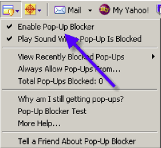

When designing a learning system where intellectual challenges are central to the course, it is important to design something that will give users a fresh perspective. Systems that are designed using the same old, traditional approaches to learning are often not optimally effective in helping students or users achieve their learning goals. This is because the human brain is equipped with the ability to adapt to sensory information that it is presented with repeatedly. This process is called “habituation”, and the end result is the user effectively ignoring sensory information to which it has become habituated. A great example of this phenomenon is pop-up ads. These have been around for years now and more likely than not, when a users is confronted with a pop-up ad, they usually “x-out” of the ad before even thinking to read it’s content. Or even allow them to come up completely, rendering this strategy completely useless
So, turning our attention back to Learning Systems, an example of a poorly designed educational site is McGraw-Hill’s Higher Education product “Connect”. This product uses a flash card like approach to presenting users with information. The users are then challenged to answer questions in a multiple-choice fashion with the correct answer revealed on the other side of the flash card. Conceptually, users have become habituated to the flash card approach, as this is something most of us have practiced since elementary school. As a result, after surveying a class of nearly 75 management students, many reported having difficulty learning the vast amount of information using Connect’s approach. A more effective approach would be to design a Learning System that continually changed approaches to the way they presented users with intellectual challenges. This would effectively keep users on their toes, not know what to expect, and would avoid habituation.